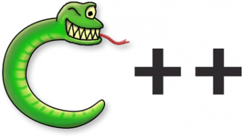

|

C++ — компилируемый, статически типизированный язык программирования общего назначения.
Поддерживает такие парадигмы программирования, как процедурное программирование, объектно-ориентированное программирование, обобщённое программирование, обеспечивает модульность, раздельную компиляцию, обработку исключений, абстракцию данных, объявление типов (классов) объектов, виртуальные функции. Стандартная библиотека включает, в том числе, общеупотребительные контейнеры и алгоритмы. C++ сочетает свойства как высокоуровневых, так и низкоуровневых языков. В сравнении с его предшественником — языком C, — наибольшее внимание уделено поддержке объектно-ориентированного и обобщённого программирования.
C++ широко используется для разработки программного обеспечения, являясь одним из самых распространенных, наиболее часто используемых языков программирования. Область его применения включает создание операционных систем, разнообразных прикладных программ, драйверов устройств, приложений для встраиваемых систем, высокопроизводительных серверов, а также развлекательных приложений (игр). Существует множество реализаций языка C++, как бесплатных, так и коммерческих и для различных платформ. Например, на платформе x86 это GCC, Visual C++, Intel C++ Compiler, Embarcadero (Borland) C++ Builder и другие. C++ оказал огромное влияние на другие языки программирования, в первую очередь на Java и C#.
Синтаксис C++ это дальнейшее развитие языка C. Одним из принципов разработки было сохранение совместимости с C. Тем не менее, C++ не является в строгом смысле надмножеством C; множество программ, которые могут одинаково успешно транслироваться как компиляторами C, так и компиляторами C++, довольно велико, но не включает все возможные программы на C.
Особенности:
С одной стороны, С++ является потомком Симулы, которую Алан Кэй определил как «Алгол с классами», и потому будет актуальной оценка С++ в сравнении с другими языками из семейства потомков Алгола (Basic, Pascal, Java, C#, Visual Basic, Delphi, D, Oberon и пр.). С другой стороны, С++ претендует на мультипарадигменность и универсальную применимость (в отличие от Си, ориентированного на очень узкий круг задач), и используется в промышленности намного шире других потомков Алгола, и потому будет актуальной оценка С++ в сравнении со всем многообразием применяемых языков, включая и Си. Во избежание повторений, оценки обычно совмещаются.
С++ — язык, складывающийся эволюционно. В отличие от языков с формальным определением семантики (см. Спецификация языков программирования), каждый элемент С++ заимствовался из других языков отдельно и независимо от остальных элементов (ничто из предложенного С++ за всю историю его развития не было новшеством в Computer Science), что сделало язык чрезвычайно сложным, со множеством дублирующихся и взаимно противоречивых элементов, блоки которых основаны на разных формальных базах. В этом отношении С++ повторяет путь PL/1, но, в отличие от последнего, длительное повсеместное использование С++ обеспечил выбор языка Си в качестве отправной точки.
Критики С++ не противопоставляют ему какой-либо конкретный язык, а наоборот, утверждают, что для всякого случая применения С++ всегда существует альтернативный инструментарий, позволяющий решить ту же задачу более эффективно и качественно. В свою очередь, сторонники С++ считают некорректным сравнивать различные аспекты С++ с совершенно различными языками, так как общий набор средств и возможностей С++ существенно шире, чем в большинстве языков, с которыми проводится сравнение, и сама по себе широта возможностей, на их взгляд, является веским оправданием несовершенства каждой отдельно взятой возможности. Более того, по их мнению, высокая совместимость с Си является одной из принципиальных черт языка, и потому все недостатки С++ оправданы преимуществами, предоставляемыми этой совместимостью (см. раздел Философия C++). При этом сторонники C++ игнорируют подтверждённый исследованиями факт, что декомпозиция проекта на несколько разных языков, наиболее пригодных для своих мини-задач, (или просто использование одного наилучшим образом подходящего языка) сокращает на порядок общую трудоёмкость разработки при одновременном повышении на порядки основных показателей качества программирования. По этой причине критики не соглашаются рассматривать недостатки С++ по отдельности и тем более делать поправку на «универсальность», утверждая, что если задача требует одновременно высокоуровневых и низкоуровневых возможностей, то использование Си совместно с языками, из которых заимствованы отсутствующие в Си возможности C++, будет более разумным, чем внедрение этих возможностей в сам Си и использование полученного языка резко возросшей степени внутренней сложности.
Таким образом, одно и то же свойство языка (совмещение большого числа элементов разных языков и отсутствие конкретной целевой ниши применения) рассматривается сторонниками как «главное достоинство», а критиками — как «главный недостаток».
Следует отметить, что рассмотрение элементов языка по отдельности означает отказ от рассмотрения языка как системы, а следовательно, и от ожидания синергизма,— что делает ограниченным (конечным) потенциал роста сложности абстракций, которые можно выразить посредством этого языка, и соответственно сужает спектр реализуемых на нём программных систем.
С++ заявляется как кроссплатформенный: стандарт языка накладывает минимальные требования на ЭВМ для запуска скомпилированных программ. На практике, для написания портируемого кода на С++ требуется огромное мастерство и опыт, и «небрежные» коды на С++ с высокой вероятностью могут оказаться непортируемыми. Тонкое владение С++ в принципе может сделать код на С++ столь же портируемым, что и код на Си (хотя, по мнению Линуса Торвальдса, С++ при этом фактически сократится до своего подмножества Си). Однако, критики С++ утверждают, что изучение и использование одновременно всех языков, противопоставляемых С++ (не вызывающих серьёзных проблем при портировании), в сумме требует примерно тех же интеллекта, усилий и временных затрат, что и изучение и использование одного только С++ на высококлассном уровне — в связи с чем становится актуальной также оценка порога вхождения и результативности (производительности и качества труда программистов).
Многие аспекты в спорах «за и против С++» обусловлены расхождением в сущностном понимании процесса стандартизации. Б.Страуструп и его последователи считают, что «стандарт — это контракт между программистами, разрабатывающими программы на языке, и программистами, разрабатывающими компиляторы языка». Каждый новый стандарт С++ являлся декларацией того, что отныне должно быть реализовано во всех компиляторах — при том, что С++ имеет естественное определение семантики, то есть потенциально зависим от реализации (стандарт содержит множество пунктов, определённых как «implementation-defined»). Традиционно, успешная стандартизация в технике представляет собой формальный перевод стандарта из статуса де-факто в статус де-юре (подытоживание общепринятых, устоявшихся знаний для обеспечения надёжной внутриотраслевой совместимости). Все противопоставляемые С++ языки программирования, если проходили процедуру стандартизации (что не обязательно для портируемости), то лишь после многолетней апробации на практике; при этом все они изначально имеют формальное определение семантики, так что накапливающиеся к моменту стандартизации изменения от первой версии языка оказываются не принципиальны. Теоретически эти определения стандартизации тождественны. На практике определение Страуструпа согласуется с традиционным лишь при условии, что нет абсолютно никаких препятствий против немедленного и беспрекословного подчинения статуса де-факто декларированному де-юре — то есть если абсолютно все компиляторы реализуют поддержку нового стандарта сразу после его выхода и со 100 % соответствием ему, и что новый стандарт не отменяет никаких положений старого, кроме признанных убыточными или вредоносными. Так может происходить лишь в условиях полного отсутствия человеческого фактора (иначе говоря, при отсутствии программистов как таковых). На практике именно этим и обусловлено значительное отставание реальной кроссплатформенности С++ от заявленной разработчиками стандарта и противоречивость предлагаемых возможностей. Сторонники С++ считают взгляд Страуструпа на стандартизацию более практико-ориентированным и принимают порождаемые им проблемы за должное.
Достоинства:
C++ содержит средства разработки программ контролируемой эффективности для широкого спектра задач, от низкоуровневых утилит и драйверов до весьма сложных программных комплексов. В частности:
• Высокая совместимость с языком Си : код на Си может быть с минимальными переделками скомпилирован компилятором C++. Внешнеязыковой интерфейс является прозрачным, так что библиотеки на Си могут вызываться из C++ без дополнительных затрат, и более того — при определённых ограничениях код на С++ может экспортироваться внешне не отличимо от кода на Си (конструкция extern "C").
• Как следствие предыдущего пункта — вычислительная производительность. Язык спроектирован так, чтобы дать программисту максимальный контроль над всеми аспектами структуры и порядка исполнения программы. Один из базовых принципов С++ — «не платишь за то, что не используешь» (см. Философия C++) — то есть ни одна из языковых возможностей, приводящая к дополнительным накладным расходам, не является обязательной для использования. Имеется возможность работы с памятью на низком уровне.
• Поддержка различных стилей программирования: традиционное императивное программирование (структурное, объектно-ориентированное), обобщённое программирование, функциональное программирование, порождающее метапрограммирование.
• Автоматический вызов деструкторов объектов в адекватном порядке (обратном вызову конструкторов) упрощает и повышает надёжность управления памятью и другими ресурсами (открытыми файлами, сетевыми соединениями, соединениями с базами данных и т. п.).
• Перегрузка операторов позволяет кратко и ёмко записывать выражения над пользовательскими типами в естественной алгебраической форме.
• Имеется возможность управления константностью объектов (модификаторы const, mutable, volatile). Использование константных объектов повышает надёжность и служит подсказкой для оптимизации. Перегрузка функций-членов по признаку константности позволяет определять выбор метода в зависимости цели вызова (константный для чтения, неконстантный для изменения). Объявление mutable позволяет сохранять логическую константность при виде извне кода, использующего кэши и ленивые вычисления.
• Шаблоны C++ дают возможность построения обобщённых контейнеров и алгоритмов для разных типов данных. Попутно шаблоны дают возможность производить вычисления на этапе компиляции.
• Возможность расширения языка для поддержки парадигм, которые не поддерживаются компиляторами напрямую. Например, библиотека Boost.Bind позволяет связывать аргументы функций. Используя шаблоны и множественное наследование, можно имитировать классы-примеси и комбинаторную параметризацию библиотек. Такой подход применён в библиотеке Loki, класс SmartPtr которой позволяет, управляя всего несколькими параметрами времени компиляции, сгенерировать около 300 видов «умных указателей» для управления ресурсами.
• Возможность встраивания предметно-ориентированных языков программирования в основной код. Такой подход использует, например библиотека Boost.Spirit, позволяющая задавать EBNF-грамматику парсеров прямо в коде C++. Boost.Spirit реализует рекурсивно-нисходящий алгоритм, что накладывает соответствующие ограничения (такие как недопустимость левой рекурсии).
• Доступность. Для С++ существует огромное количество учебной литературы, переведённой на всевозможные языки. Язык имеет высокий порог вхождения, но среди всех языков такого рода обладает наиболее широкими возможностями.
Недостатки и критика:
В погоне за быстротой выполнения программ язык С, С++ и прочие С-подобные языки упустили самое главное, для чего была придумана идея языков высокого уровня - абстрагирование от сложностей машинного языка и приближение компиляторов к естественным (человеческим) языкам. С-подобные языки изначально этим похвастаться не могли.
Сторонники С++ позиционируют его как «универсально применимый» — вплоть до отождествления «применимости» с Тьюринг-полнотой (что является ошибкой) и одновременно с оптимальностью, то есть обоснованностью выбора его в качестве инструмента для данной конкретной задачи; при этом ни одной конкретной задачи не обозначается, а наоборот, делается утверждение, что С++ подходит для любой задачи (что теоретически невозможно). Однако С++ не отвечает многим требованиям качества программирования, не предъявляемым к Си, но важным для широкого спектра задач прикладного программирования. В частности, критики полагают, что:
• Плохо продуманный синтаксис сужает спектр применимости языка (что, с учётом претензий на «универсальность», делает его крайне неудобным в некоторых задачах).
• Унаследованные от Си низкоуровневые свойства существенно тормозят и затрудняют прикладную разработку.
• Язык не содержит многих важных возможностей.
• Язык содержит опасные возможности, существенно снижающие качество программ сразу по всем показателям.
• Производительность труда программистов на языке оказывается неоправданно низка, а продукт труда — низкокачественным.
В то же время, критике подвергается и применимость С++ в низкоуровневой разработке в качестве «улучшенного Си».
Многие конкретные недостатки вытекают непосредственно из свойств семантики системы типов языка: она не отвечает требованиям полноты и ортогональности, при этом обладает избыточностью и предусматривает понятие «приведения типов» (как явно, так и неявно). В отношении типизации, С++ чаще всего противопоставляются либо типизируемые по Хиндли-Милнеру, либо динамически типизируемые языки. Начиная со стандарта C++0x, в языке появилась возможность автоматического выведения типов, из-за чего возникло заблуждение, что отныне «С++ поддерживает вывод типов по Хиндли-Милнеру». Однако, системе типов С++ противопоставляется не сам механизм выведения типов, а полиморфная семантика системы типов Хиндли-Милнера, предусматривающая в том числе и механизм выведения, но не как главное преимущество. Существуют примеры развития Си по пути типизации Хиндли-Милнера (см. раздел Влияние и альтернативы).
Критика C++ с позиций только ООП (без сравнения методологий проектирования) с описанием вреда от влияния C++ на другие языки приведена в работе. В случае языково-ориентированного проектирования программ применимость С++, как и при использовании любых других языков, ограничивается нижним уровнем системы — реализацией предметно-специфичных языков (DSL) первого уровня. Для этой задачи С++ объективно является далеко не оптимальным выбором (см. раздел Отсутствие возможностей). В случае применения методологии «чистого встраивания» DSL в язык общего назначения (которая является традиционной для Lisp/ML, и для которой в С++ потенциально предназначена библиотека Boost.Spirit), с т.з. воплощения изоморфизма Карри-Ховарда выбор С++ в качестве базы был бы абсурден (см. ниже). Наиболее ортодоксальные противники С++ утверждают, что этот язык нельзя использовать в реальной индустрии вообще, и его существование имеет лишь педагогический смысл — в качестве образцово-показательной коллекции антипаттернов в задаче разработки языков программирования.
|